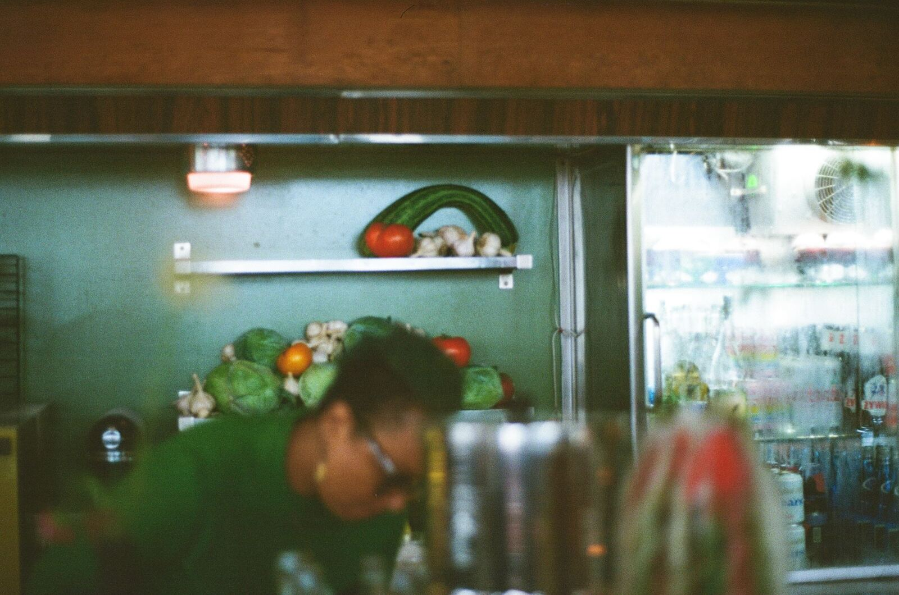

Story
My third business in this space.
The building went up in 1964. The restaurant is younger than that, and it has closed once already.
2014 to 2023
Rose's Fine Food opened on East Jefferson in 2014 and spent nine years defining what brunch meant in Detroit. It closed in 2023. The pandemic years had turned it into something its regulars did not recognize, and Molly Mitchell was burned out. She stepped away from daily service entirely and went to teach in a local culinary arts program.
September 2025
The room reopened as Roses. Dinner only, twenty-eight seats, Polish American cooking pulled from Mitchell's own family and filtered through whatever Michigan farms have that week. Aaron Rush, a regular for years, came on as general manager. "He orchestrates it all like a dance," Mitchell says.
Inside twelve months it was the Detroit Free Press Restaurant of the Year and on the New York Times' list of its fifty favorite restaurants in America.

One year back open, in her words
When they talk about the charm of the third time it really hits after watching this place blossom over the past year. My third business in this space. Messy but that's what getting back up is like. I didn't realize how much I had lost until I saw people at the counter and flowers on the tables last September. This place is alive, my diner phoenix.Molly Mitchell, August 2026
Lightly edited from the restaurant's own Instagram. In a real build this page would carry her words with her permission and her byline, not a rewrite of them.
The people it comes from
The menu credits them, so the site should too.
Lillian's Loaves
The sourdough on the bread platter and under the burger.
Marrow
Dry-aged beef, ground for the Roses Burger.
Ma Coen's
Smoked whitefish for the Polish nachos.
Amalgam Farms
Produce, week by week.
Sown In Peace
Detroit grown greens.
The Flowering Hearth
The flowers on the tables, cut from the garden out back.
Come see the room.
Reservations open thirty days out. Walk-ins welcome. Closed Tuesday.